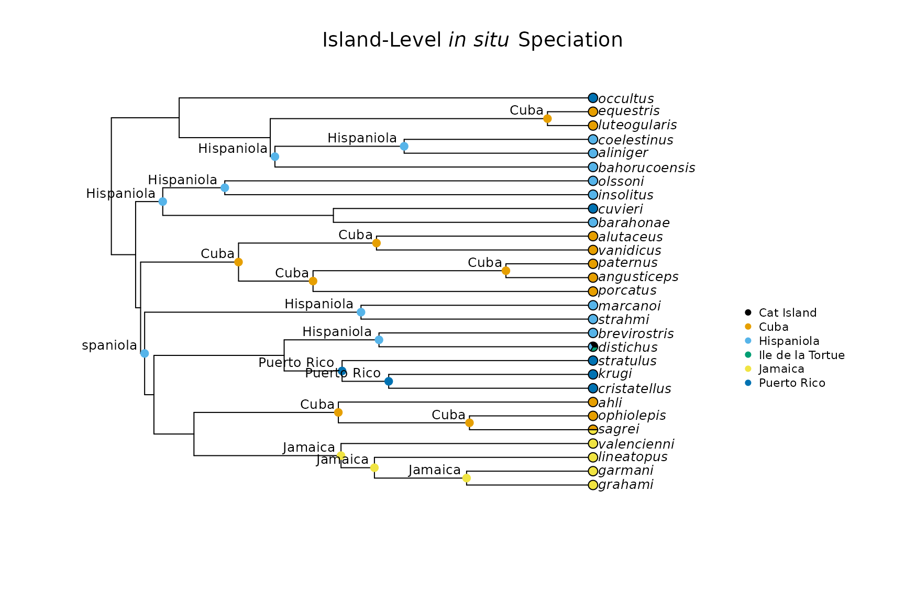

Stochastic character mapping with insitu
StochasticCharMapping.RmdOverview
run_geo_asr estimates a single maximum likelihood
ancestral state reconstruction for each island. Stochastic character
mapping goes further by sampling many possible evolutionary histories
consistent with the data, giving you a posterior distribution of in-situ
event classifications rather than a single point estimate.
simmap_insitu wraps phytools::make.simmap
and returns the same output structure as run_geo_asr, so it
plugs directly into map_insitu_events and everything
downstream without any changes to the rest of your workflow. It also
accepts a list of trees, propagating phylogenetic uncertainty from a
posterior sample alongside ASR uncertainty from the stochastic maps.
Setup
Load and prepare the same Anolis dataset used in the Getting Started vignette. Both vignettes use the same objects, so if you are working through them in order you can skip this step.
library(insitu)
tree <- ape::read.tree(
system.file("extdata/Patton_etal_trimmed.tree", package = "insitu")
)
dat <- read.csv(
system.file("extdata/anolis_dat.csv", package = "insitu")
)
tree <- prep_phylo(tree)
matched <- match_island_phylo(phy = tree, locs = dat)
#> ℹ Species dropped from the tree because they were not in the data: transversalis and heterodermus
#> ℹ Species dropped from the data because they were not in the tree: loysiana
#> ℹ Matching complete! Here are the first 5 locales in your data:
#> # A tibble: 5 × 3
#> locale species_list richness
#> <chr> <chr> <int>
#> 1 Cat Island distichus 1
#> 2 Cuba luteogularis, equestris, alutaceus, vanidicus, porc… 10
#> 3 Hispaniola coelestinus, aliniger, bahorucoensis, olssoni, inso… 10
#> 4 Ile de la Tortue distichus 1
#> 5 Jamaica valencienni, lineatopus, garmani, grahami, sagrei 5Running stochastic character mapping
Pass the matched tree and PAM to simmap_insitu with a
transition model and the number of stochastic maps to draw. More maps
give more stable posterior averages at the cost of computation time; 100
is reasonable for publication analyses, 10 is sufficient for
exploration.
sim_results <- simmap_insitu(
phy = matched$phy,
PAM = matched$PAM,
model = "ER",
nsim = 10
)
#> Running MCMC burn-in. Please wait....
#> Running 1000 generations of MCMC, sampling every 100 generations.
#> Please wait....
#>
#> Running MCMC burn-in. Please wait....
#> Running 1000 generations of MCMC, sampling every 100 generations.
#> Please wait....
#>
#> Running MCMC burn-in. Please wait....
#> Running 1000 generations of MCMC, sampling every 100 generations.
#> Please wait....
#>
#> Running MCMC burn-in. Please wait....
#> Running 1000 generations of MCMC, sampling every 100 generations.
#> Please wait....
#>
#> Running MCMC burn-in. Please wait....
#> Running 1000 generations of MCMC, sampling every 100 generations.
#> Please wait....
#>
#> Running MCMC burn-in. Please wait....
#> Running 1000 generations of MCMC, sampling every 100 generations.
#> Please wait....The result is a named list in exactly the same format as the output
of run_geo_asr. The probabilities at each node now reflect
the average across all stochastic maps rather than a single likelihood
estimate.
Propagating phylogenetic uncertainty
If you have a posterior sample of trees from a Bayesian analysis,
pass them as a list. simmap_insitu runs the stochastic maps
on each tree and averages the posteriors across both trees and maps.
This is the recommended approach for publication analyses where
phylogenetic uncertainty is non-trivial.
# trees is a multiPhylo object from a Bayesian posterior sample
sim_results_multi <- simmap_insitu(
phy = trees, # list of phylo objects
PAM = matched$PAM,
model = "ER",
nsim = 10
)Classifying events and comparing to the ML reconstruction
Event classification from simmap_insitu works
identically to classification from run_geo_asr. Pass the
result directly to map_insitu_events.
events_simmap <- map_insitu_events(
recons = sim_results,
phy = matched$phy,
PAM = matched$PAM,
threshold = 0.5
)
head(events_simmap, n = 5)
#> node island ancestor_presence_prob in_situ export import
#> 1 32 Cuba 0.0 FALSE <NA> <NA>
#> 2 33 Hispaniola 0.5 TRUE <NA> <NA>
#> 3 35 Jamaica 0.0 FALSE <NA> <NA>
#> 4 36 Jamaica 0.9 TRUE <NA> <NA>
#> 5 37 Jamaica 1.0 TRUE <NA> <NA>Comparing the simmap classification to the ML classification from
run_geo_asr is a quick way to assess whether the two
approaches agree. Nodes where they disagree are candidates for closer
inspection using insitu_confidence.
asr_ml <- run_geo_asr(phy = matched$phy, PAM = matched$PAM, model = "ER")
events_ml <- map_insitu_events(
recons = asr_ml,
phy = matched$phy,
PAM = matched$PAM,
threshold = 0.5
)
cat("In-situ events (ML): ", sum(events_ml$in_situ == TRUE, na.rm = TRUE), "\n")
#> In-situ events (ML): 16
cat("In-situ events (simmap): ", sum(events_simmap$in_situ == TRUE, na.rm = TRUE), "\n")
#> In-situ events (simmap): 19Visualizing the simmap classification
plot_classified_phylo works with either reconstruction.
Nodes where the simmap posterior probability is close to the threshold
will show visually in the same way, but a wider ribbon of support can be
inspected more directly with insitu_confidence.
plot_classified_phylo(phy = matched$phy, events = events_simmap, PAM = matched$PAM)
Checking node-level support
insitu_confidence extracts the per-node per-island
posterior probabilities directly from the reconstruction object, whether
from run_geo_asr or simmap_insitu. Nodes with
low support across all islands are the ones most sensitive to threshold
choice.
conf <- insitu_confidence(recons = sim_results)
#> Warning in data.frame(node = as.integer(rownames(lik)), island = island, : NAs
#> introduced by coercion
#> Warning in data.frame(node = as.integer(rownames(lik)), island = island, : NAs
#> introduced by coercion
#> Warning in data.frame(node = as.integer(rownames(lik)), island = island, : NAs
#> introduced by coercion
#> Warning in data.frame(node = as.integer(rownames(lik)), island = island, : NAs
#> introduced by coercion
#> Warning in data.frame(node = as.integer(rownames(lik)), island = island, : NAs
#> introduced by coercion
#> Warning in data.frame(node = as.integer(rownames(lik)), island = island, : NAs
#> introduced by coercion
# Nodes with high support for any island
conf[conf$support == "high", ]
#> node island prob support
#> distichus NA Cat Island 1.0 high
#> 391 39 Cuba 0.9 high
#> 401 40 Cuba 0.9 high
#> 461 46 Cuba 0.9 high
#> 471 47 Cuba 1.0 high
#> 481 48 Cuba 1.0 high
#> 491 49 Cuba 1.0 high
#> 571 57 Cuba 1.0 high
#> sagrei1 NA Cuba 1.0 high
#> ophiolepis1 NA Cuba 1.0 high
#> ahli1 NA Cuba 1.0 high
#> porcatus1 NA Cuba 1.0 high
#> angusticeps1 NA Cuba 1.0 high
#> paternus1 NA Cuba 1.0 high
#> vanidicus1 NA Cuba 1.0 high
#> alutaceus1 NA Cuba 1.0 high
#> luteogularis1 NA Cuba 1.0 high
#> equestris1 NA Cuba 1.0 high
#> 522 52 Hispaniola 0.8 high
#> 542 54 Hispaniola 0.9 high
#> 552 55 Hispaniola 0.9 high
#> 562 56 Hispaniola 0.8 high
#> distichus2 NA Hispaniola 1.0 high
#> brevirostris2 NA Hispaniola 1.0 high
#> strahmi2 NA Hispaniola 1.0 high
#> marcanoi2 NA Hispaniola 1.0 high
#> barahonae2 NA Hispaniola 1.0 high
#> insolitus2 NA Hispaniola 1.0 high
#> olssoni2 NA Hispaniola 1.0 high
#> bahorucoensis2 NA Hispaniola 1.0 high
#> aliniger2 NA Hispaniola 1.0 high
#> coelestinus2 NA Hispaniola 1.0 high
#> distichus3 NA Ile de la Tortue 1.0 high
#> 364 36 Jamaica 0.9 high
#> 374 37 Jamaica 1.0 high
#> 384 38 Jamaica 1.0 high
#> grahami4 NA Jamaica 1.0 high
#> garmani4 NA Jamaica 1.0 high
#> lineatopus4 NA Jamaica 1.0 high
#> valencienni4 NA Jamaica 1.0 high
#> sagrei4 NA Jamaica 1.0 high
#> 425 42 Puerto Rico 0.9 high
#> 435 43 Puerto Rico 1.0 high
#> cristatellus5 NA Puerto Rico 1.0 high
#> krugi5 NA Puerto Rico 1.0 high
#> stratulus5 NA Puerto Rico 1.0 high
#> cuvieri5 NA Puerto Rico 1.0 high
#> occultus5 NA Puerto Rico 1.0 highDownstream analysis
From this point the workflow is identical to the Getting Started vignette. Diversity decomposition, the in-situ speciation index, and island ontogeny correction all accept the events table from either reconstruction approach.
div <- decompose_diversity(
phy = matched$phy,
events = events_simmap,
PAM = matched$PAM
)
div
#> island n_species n_insitu n_import n_export prop_insitu
#> 1 Cat Island 1 0 1 0 0.0
#> 2 Cuba 10 10 2 1 1.0
#> 3 Hispaniola 10 10 0 6 1.0
#> 4 Ile de la Tortue 1 0 1 0 0.0
#> 5 Jamaica 5 4 1 0 0.8
#> 6 Puerto Rico 5 3 2 0 0.6